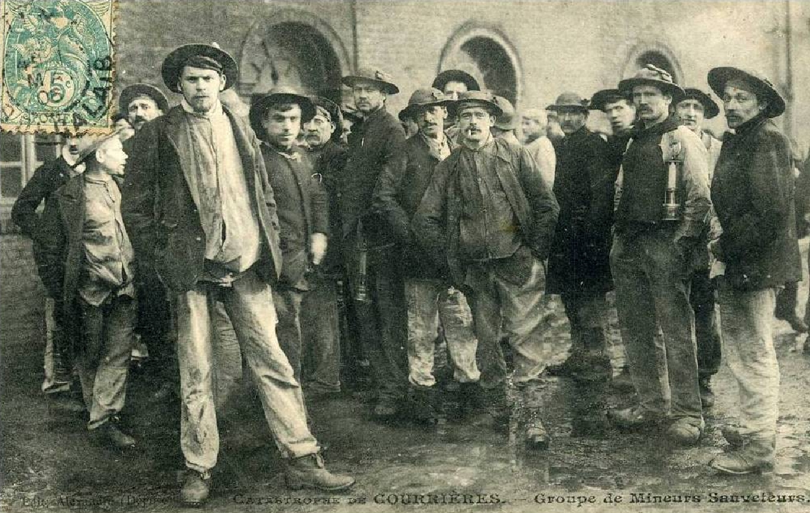

The Courrières Mine Disaster
A Labyrinth of Dust: On the morning of March 10, 1906, over 1,800 men and boys descended into the sprawling, heavily interconnected shafts of the Courrières colliery in the Pas-de-Calais region of northern France. The mine was considered modern for its time, but its design harbored a fatal flaw: the extensive network of tunnels connected multiple different pits without adequate compartmentalization or ventilation to isolate accidents. Sometime around 6:30 AM, a massive explosion ripped through the deep subterranean darkness. Investigators believe a localized ignition of methane gas (known as firedamp)—possibly from an open miner's lamp or a blasting explosive—sparked the initial blast. The initial methane explosion was deadly, but it was the secondary reaction that caused the cataclysm. The shockwave kicked up massive amounts of highly combustible coal dust that had been allowed to settle on the floors and walls of the tunnels. This suspended dust ignited, creating a massive, self-sustaining fireball that roared through miles of interconnected shafts.

The explosion destroyed the heavy elevator cages, collapsed the tunnel roofs, and instantly consumed the oxygen in the mine, leaving behind suffocating clouds of carbon monoxide and toxic gases (afterdamp). The surface response was marked by confusion and tragic miscalculations. Assuming no one could have survived the blast and the subsequent fires, the mine owners prioritized sealing off sections of the mine to smother the flames and save the coal seam, effectively condemning any surviving miners to death.
The Doomed and the Rescapés: However, in an astounding display of human endurance, a group of thirteen survivors (who became known as the rescapés) managed to navigate the pitch-black, toxic, and collapsed labyrinth for 20 harrowing days. They survived by eating rotting bark from the mine's wooden support beams, drinking pooling groundwater, and eventually cannibalizing the emergency provisions of dead horses, before finally finding their way to the surface.
Key Facts
Date: March 10, 1906
Location: Courrières, Pas-de-Calais, France
Casualties: 1,099 dead (including many children); triggered massive labor strikes and political upheaval in France
Cause: Methane gas ignition that triggered a catastrophic coal dust explosion throughout miles of interconnected mine shafts
With 1,099 fatalities, the Courrières disaster remains the absolute deadliest mining accident in European history, and the second deadliest globally. The callousness of the early rescue attempts and the sheer scale of the preventable loss of life triggered massive, violent strikes across the French mining industry and plunged the nation into a political crisis.
The tragedy eventually forced comprehensive changes in global mining safety, including the mandatory use of specialized breathing apparatuses for rescue teams, strict regulations on the removal and dampening of coal dust, and the critical need to compartmentalize mine shafts to prevent an explosion from spreading.